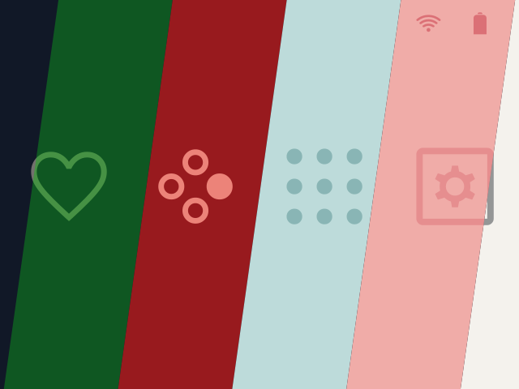
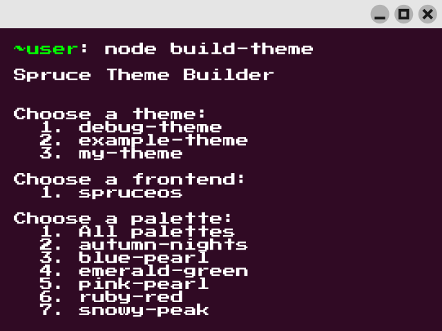

Web Theme Builder
Build a SpruceOS theme from a project ZIP directly in your browser.
Pick a background, select your color palette and your theme is ready in a few minutes. This tool is easy to use for both beginners and designers.

spruce-theme-builder is a Node.js tool for designers who want to work directly with theme assets, palettes and front-end options.

Build a SpruceOS theme from a project ZIP directly in your browser.
Create your own palettes and use them for different projects.
Pick a font of your choosing; the patcher adds the symbols needed for the SpruceOS UI.